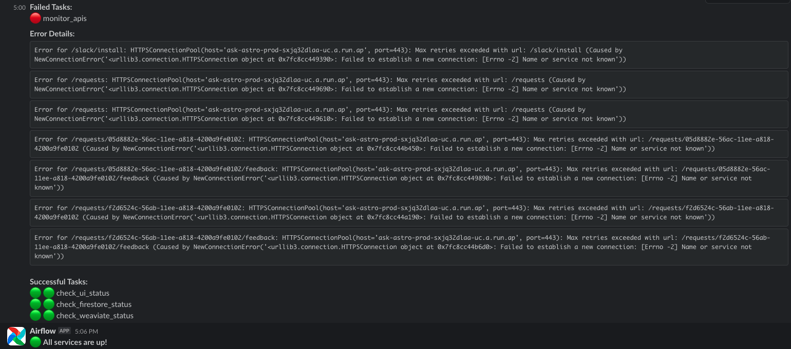
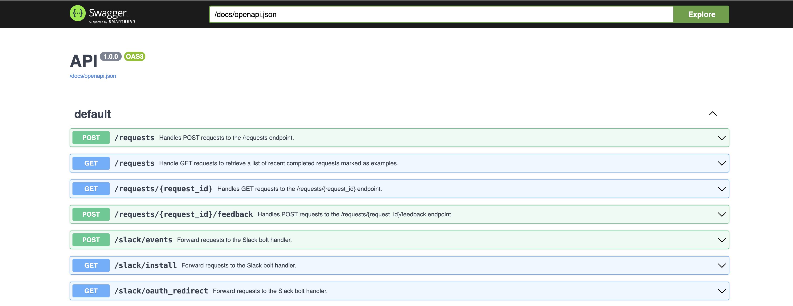
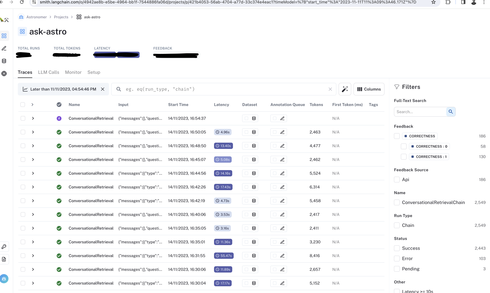
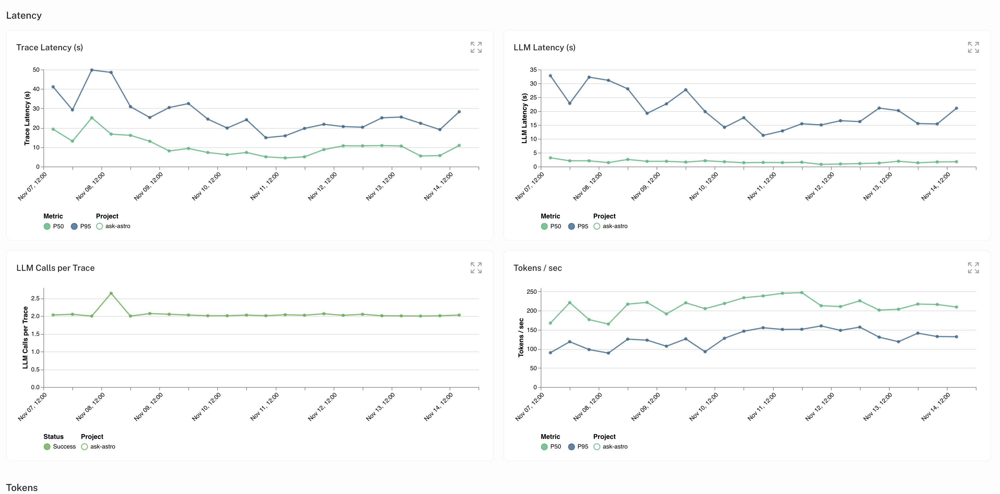

Monitoring and Observability for Ask-Astro#
Overview#
This document outlines the monitoring and observability practices implemented for Ask-Astro. These practices ensure the system’s reliability and performance, as well as quick detection and resolution of issues. You can adapted them for similar systems requiring robust monitoring solutions.
Infrastructure Monitoring#
Apache Airflow® DAGs#
Alerting#
Slack Integration: In case of any failures, sends alerts to the designated Slack channel as DAGs run every 5 minutes. Regular status updates are also posted daily.

Components Monitored#
APIs: Back-end APIs are tested in sequence. Failure of any test results in an immediate alert. 
Google Firebase: Monitors the Firestore app for its existence and health.
Weaviate Database: Ensures the presence of necessary classes and checks embedding counts.
UI Monitoring: Regular checks of the UI for a 200 response status.
UI Link: https://ask.astronomer.io/
Apache Airflow® Data Ingestion and Feedback DAGs: Monitors for completeness and errors.
Open AI Integration: Ensures the availability and response quality of Open AI services.
LLM Model Monitoring#
Uses Langsmith or a similar AI monitoring platform for detailed insights into the LLM’s performance.
 
Aspects Monitored#
Usage Statistics: Tracks query frequency, types, and usage patterns.
Response Quality: Evaluates accuracy, relevance, and helpfulness of LLM responses.
User Feedback: Collects and analyzes user feedback for continuous improvement.
Volume Metrics: Monitors trace counts, call counts, and success rates.
Token Analysis: Examines patterns in the model’s responses.
Error Rates: Keeps track of model error rates to maintain reliability.
Latency Metrics: Measures response times for optimal user experience.
Handling Failures#
Document and follow detailed procedures for handling failures. These procedures should include the following
Alerts: Send alerts to the designated Slack channel for immediate attention.
Error Logs: Generate and store error logs for future reference.
Error Resolution Documentation: Document the error resolution process for future reference.
Rolling back Deployment: In case of a deployment failure, roll back to the previous version to ensure system availability.
Point of Contact for each Component: Designate a point of contact for each component to ensure quick resolution of issues.
Update the user: Notify the user of the issue and the expected resolution time.
Conclusion#
This monitoring setup is crucial for maintaining the operational efficiency and reliability of Ask-Astro. You can adapt and apply it to similar systems to ensure consistent performance and quick issue resolution.